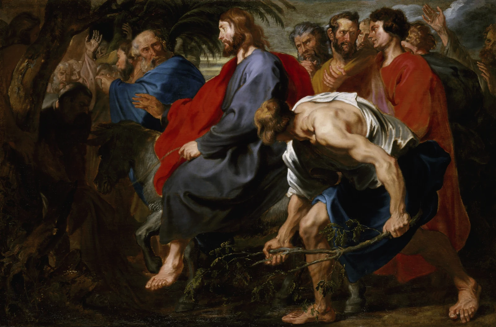
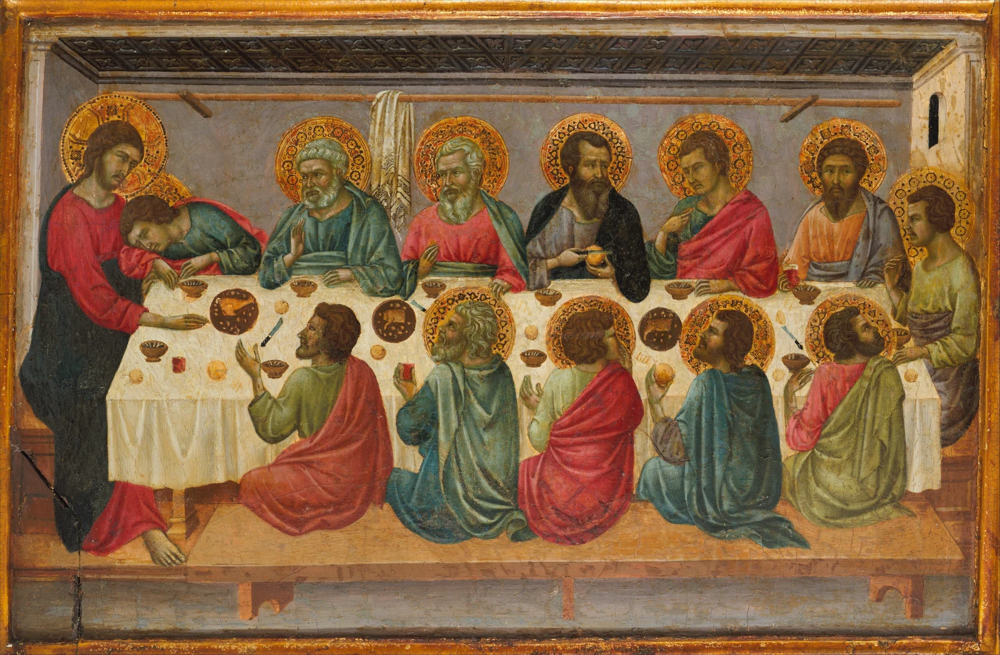
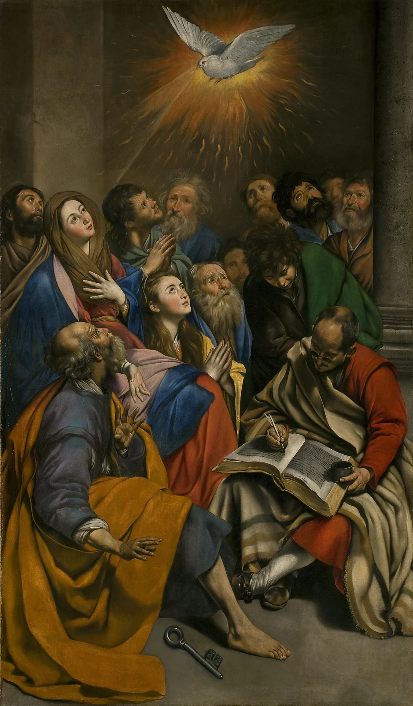
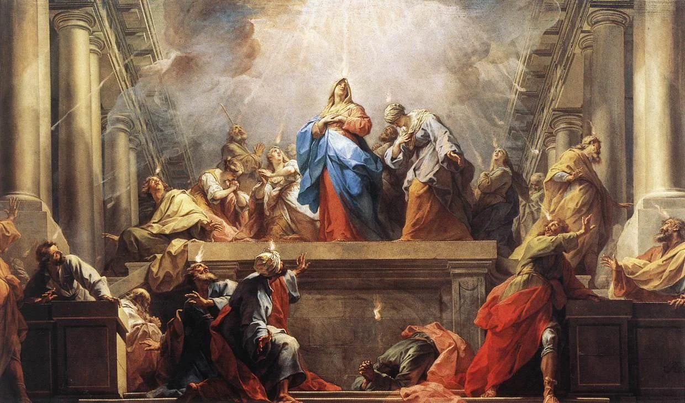
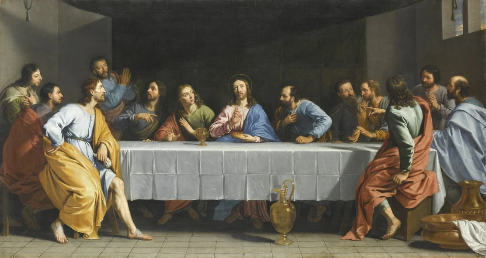
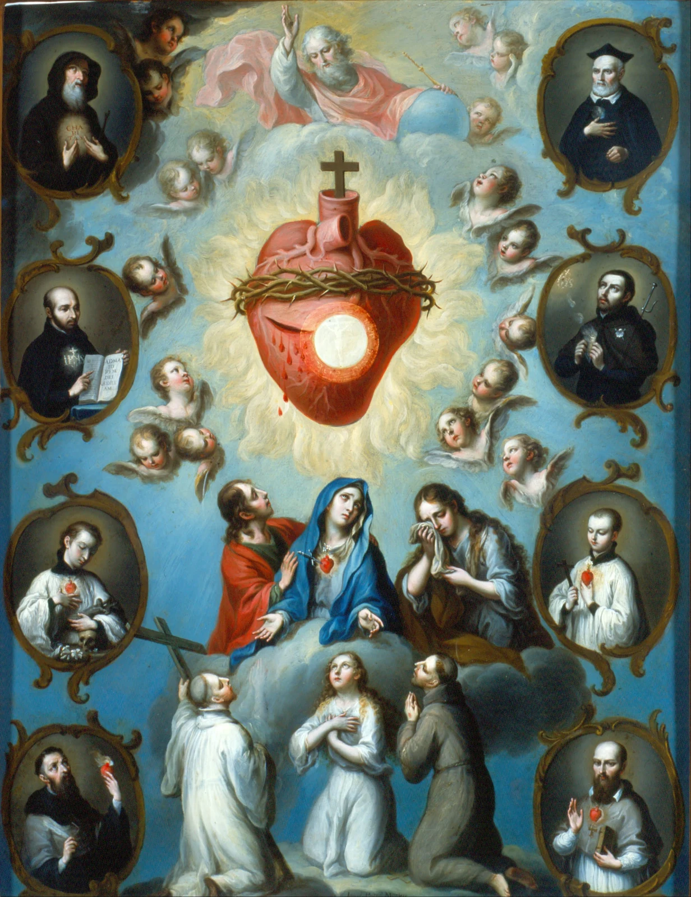
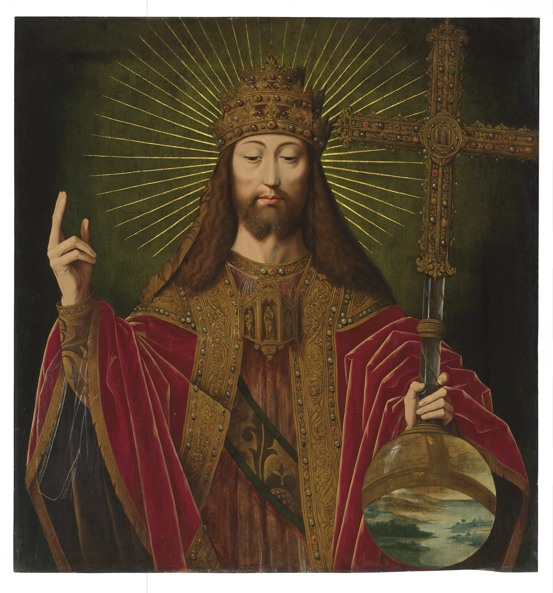
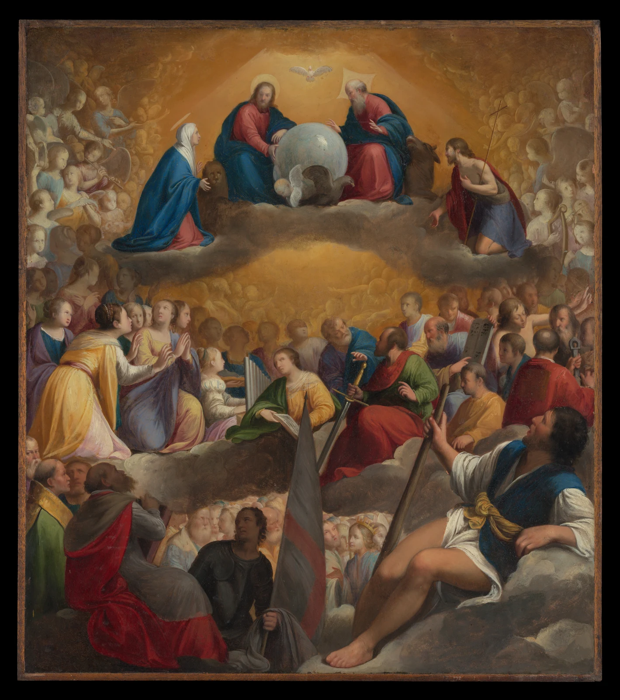
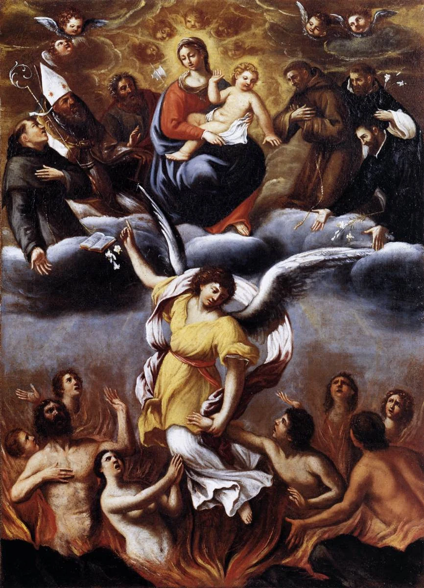
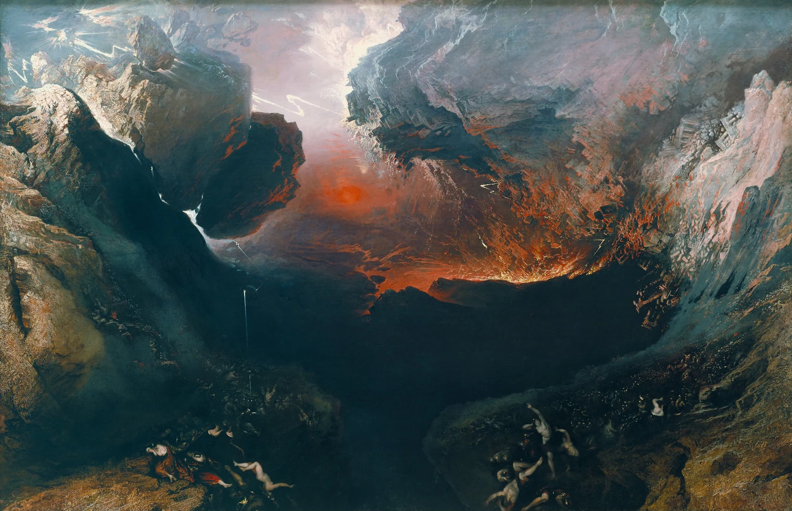

2026-03-29 · Palm Sunday
The Entry of Christ into Jerusalem
Anthony van Dyck
PUBLIC_DOMAIN_PHOTO_PAGE_CHECK_REPRODUCTIONPHOTO REVIEW: PENDING · COMMONS_PUBLIC_DOMAIN_REPRODUCTION_JURISDICTION_REVIEW
These are the ten paintings the curator has already selected.
This page reviews each specific photographic reproduction at mobile widths.
The entire painted surface is shown with object-fit:contain; no replacement,
ratings or new painting selection. Rights and photo acceptance are still pending:
this is not a publication or production release.

2026-03-29 · Palm Sunday
Anthony van Dyck
PUBLIC_DOMAIN_PHOTO_PAGE_CHECK_REPRODUCTIONPHOTO REVIEW: PENDING · COMMONS_PUBLIC_DOMAIN_REPRODUCTION_JURISDICTION_REVIEW

2026-04-02 · Holy Thursday
Ugolino da Siena
MET_OPEN_ACCESS_CC0_API_CHECKPHOTO REVIEW: PENDING · MET_CC0_POLICY_CONFIRMED_PER_OBJECT

2026-05-23 · Pentecost Vigil
Juan Bautista Maíno
VERIFY_FULL_SURFACE_NOT_DETAIL_AND_PRADO_PHOTOPHOTO REVIEW: PENDING · COMMONS_PUBLIC_DOMAIN_REPRODUCTION_JURISDICTION_REVIEW

2026-05-24 · Pentecost
Jean Restout
LOW_RESOLUTION_1240_WIDE_PHONE_ASSESS_NEVER_AUTOREJECTPHOTO REVIEW: PENDING · COMMONS_PUBLIC_DOMAIN_REPRODUCTION_JURISDICTION_REVIEW

2026-05-27 · Pentecost Ember Wednesday
Philippe de Champaigne
PREFER_UNFRAMED_1112x591_WHOLE_PAINTED_SURFACE_MOBILE_FIRST; retain original framed high-resolution photo as separately unapproved alternative. Both depict exactly same Louvre INV1125 artwork; don't crop painted surface.PHOTO REVIEW: PENDING · COMMONS_PUBLIC_DOMAIN_REPRODUCTION_JURISDICTION_REVIEW

2026-06-12 · Sacred Heart
Juan Patricio Morlete Ruiz
COMMONS_PD_ART_REVIEWPHOTO REVIEW: PENDING · COMMONS_PUBLIC_DOMAIN_REPRODUCTION_JURISDICTION_REVIEW

2026-10-25 · Christ the King
Ambrosius Benson
COPY_RIGHTS_FROM_FILE_AND_IDENTITY_REVIEWPHOTO REVIEW: PENDING · COMMONS_PUBLIC_DOMAIN_REPRODUCTION_JURISDICTION_REVIEW

2026-11-01 · All Saints
Carlo Saraceni
MET_OPEN_ACCESS_CC0_API_CHECKPHOTO REVIEW: PENDING · MET_CC0_POLICY_CONFIRMED_PER_OBJECT

2026-11-02 · All Souls
Ludovico Carracci
1200_HEIGHT_CAN_BE_PHONE_ACCEPTED_IF_CLEARPHOTO REVIEW: PENDING · COMMONS_PUBLIC_DOMAIN_REPRODUCTION_JURISDICTION_REVIEW

2026-11-29 · First Sunday of Advent
John Martin
EXACT_COMMONS_PHOTO_RIGHTS_CHECKPHOTO REVIEW: PENDING · COMMONS_PUBLIC_DOMAIN_REPRODUCTION_JURISDICTION_REVIEW